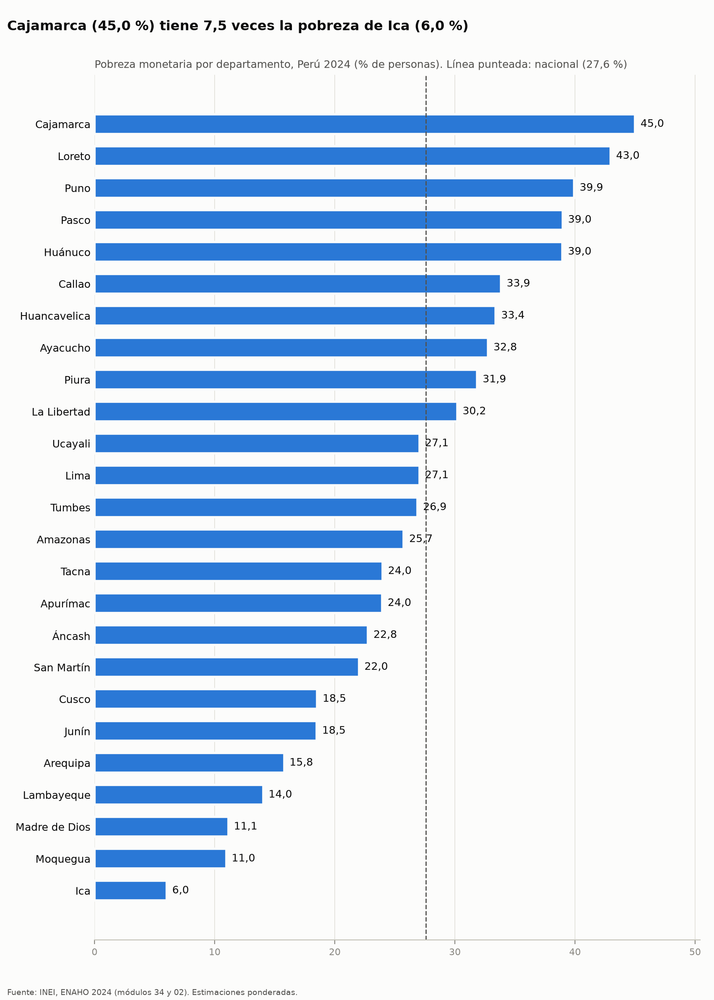
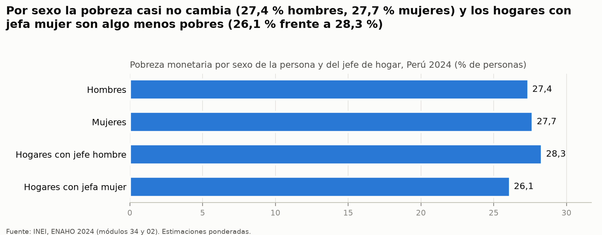

Python Intermedio · QLAB · Tarea 4 · Noviembre de 2026
¿A quién protege hoy la política social en el Perú?
Un agente de investigación construido con Claude Code consulta los precios del Banco Central de Reserva (BCRP) con un servidor MCP propio y procesa los microdatos de la Encuesta Nacional de Hogares (ENAHO 2024) del INEI con tres Skills. Con esas herramientas respondió cuánto vale hoy la transferencia del programa Juntos, cuánto subieron los alimentos y dónde está la pobreza.
Diego Enrique Sime Rendón · desarrollado con Claude Code · datos del BCRP hasta octubre de 2026 y de la ENAHO 2024
Cómo funciona
Un modelo de lenguaje no sabe las cifras de 2026: hay que darle herramientas
El modelo no tiene datos posteriores a su entrenamiento ni puede leer una encuesta de 100 mil personas de memoria. El proyecto le da dos tipos de herramientas y guarda cada llamada, para que cada número del informe tenga una fuente que se pueda repetir.
1 · Fuentes oficiales
2 · Herramientas
bcrp5 herramientas:
buscar_series, serie, resumen, valor_real (propia) y
graficar_serie. Más un recurso y un prompt.limpiando-enaho limpia y valida,
graficando-enaho hace los gráficos y mapeando-enaho, el mapa.3 · Agente
4 · Resultados
¿Qué es un servidor MCP?
Un programa que ofrece funciones a un asistente de IA con un protocolo estándar (Model Context Protocol). Este envuelve la API del BCRP: el asistente pide «la serie PN38705PM de 2006 a 2026» y recibe los datos con el enlace de su fuente.
¿Qué es una Skill?
Una carpeta con instrucciones (SKILL.md) y scripts que el asistente carga cuando la tarea
lo pide. Las de este proyecto guardan las reglas de la ENAHO: quién cuenta como residente, qué factor de
expansión usar y cómo validar el resultado.
¿Por qué no basta con preguntarle al modelo?
Porque no tiene los datos. Sin herramientas, en la evaluación se abstuvo en 9 de 10 preguntas (no inventó cifras, pero tampoco respondió). Con ellas acertó las 10.
Hallazgo 1
Los S/ 100 de Juntos valen hoy la mitad que en 2006
Juntos paga S/ 100 al mes desde 2006, y la ENAHO 2024 lo confirma: la mediana que declaran los hogares es S/ 1 202 al año. Mientras tanto, entre diciembre de 2006 y octubre de 2026, los precios de Lima subieron 94,3 % y los de los alimentos, 129,7 %.
Desde 2006, los alimentos subieron más que el resto de precios
Índice de precios al consumidor de Lima Metropolitana, diciembre de 2006 = 100. Pasa el cursor (o el dedo) por el gráfico para ver cada mes.
Fuente: BCRP, series PN38705PM (IPC) y PN39445PM (IPC Alimentos y Bebidas), pedidas al
servidor MCP bcrp con la herramienta serie.
Calcula el valor real de una transferencia
Hace lo mismo que la herramienta valor_real del servidor MCP, con
los mismos datos.
La canasta del hogar pobre mantiene fija la participación de los alimentos que da la ENAHO 2024 (44,6 %): aplica el IPC de alimentos a esa parte y el IPC sin alimentos (PN38706PM) al resto. Es una aproximación, no un índice oficial.
Hallazgo 2
Los alimentos pesan más en el gasto de los pobres
- Los hogares pobres destinan 44,6 % de su gasto a alimentos; los no pobres, 33,2 %.
- Con la inflación de alimentos de octubre de 2026 (5,28 % en 12 meses), los alimentos explican 2,36 puntos del alza anual del costo de vida de un hogar pobre, y 1,75 puntos en uno no pobre.
- En el último año eso casi no cambió el total, porque los alimentos y el resto subieron parecido (5,28 % y 5,23 %). En veinte años sí importa: con la canasta de 2024 fija, el costo de vida subió 97,4 % para un hogar pobre y 90,7 % para uno no pobre.
Parte del gasto del hogar que se va en alimentos
% del gasto total, promedio ponderado, 2024
Fuente: INEI, ENAHO 2024, módulo 34 (gasto del grupo 1 sobre gasto total), ponderado con
factor07 × mieperho. Skill limpiando-enaho.
Hallazgo 3
La tasa de pobreza es más alta en el campo, pero la mayoría de los pobres vive en ciudades
En 2024, 27,6 % de las personas era pobre y 5,5 % pobre extrema. La pobreza rural (39,3 %) supera a la urbana (24,8 %). Pero como en las ciudades vive mucha más gente, 72,7 % de los pobres es urbano y 33,9 % vive en Lima Metropolitana.
Fuente: INEI, ENAHO 2024, módulo 34, ponderado con factor07 × mieperho. 25 departamentos (Lima y
Callao por separado), unidos al mapa por el código de ubigeo, no por el nombre. Skill
mapeando-enaho. La diferencia máxima con la referencia oficial es de 0,05 puntos.
Los hogares con niños menores de 5 años son los más pobres
% de personas en pobreza, 2024. Elige cómo agrupar.
Fuente: INEI, ENAHO 2024, ponderado con factor07 × mieperho (por sexo de la persona, con facpob07). La pobreza extrema no se calculó por jefatura ni por sexo.
Hallazgo 4
Juntos llega a la mitad de los pobres rurales, pero a 15 % de los urbanos
Personas que viven en un hogar que recibe Juntos
% de cada grupo, 2024
Fuente: INEI, ENAHO 2024 (hogares con ingtpu01 > 0), ponderado con factor07 × mieperho.
Cálculo de scripts/cruce_y_contraste.py.
- La ENAHO estima 1,04 millones de hogares con Juntos. Uno de cada cuatro pobres (24,3 %) vive en uno de ellos.
- El programa llega más donde la pobreza es más intensa: al campo y a la pobreza extrema. Pero la mayoría de los pobres es urbana, y a ellos llega poco.
- Tampoco llega a la mayoría de los pobres con niños pequeños (31,9 %), el tipo de hogar con más pobreza.
- La mitad de las personas en hogares con Juntos no es pobre según la línea de 2024. Eso no prueba una mala focalización: el programa no usa esa línea, y la propia transferencia puede sacar a un hogar de la pobreza.
Son asociaciones, no causas: con una sola encuesta no se puede medir el efecto del programa.
Evaluación
Con las herramientas, de 1 a 10 respuestas correctas
Las mismas 10 preguntas, cada una en una sesión nueva de Claude Code (modelo Sonnet), sin herramientas y con el servidor MCP y las Skills. Las respuestas esperadas se calcularon por otro camino y se guardaron en Git antes de evaluar.
| Pregunta | Esperada | Sin herramientas | Con MCP y Skills | Segundos | Qué usó |
|---|
Sin herramientas, el modelo no inventó cifras: se abstuvo cuando no tenía el dato. Solo
respondió la pobreza de 2024, que el INEI publicó en 2025 y el modelo recordaba. Abre cada pregunta para ver
la respuesta completa. Detalle en
evaluacion/comparacion.md.
Verificación
Cada cifra clave se comprobó por otro camino
- ✓ IPC de diciembre de 2006 y de agosto de 2026: página web del BCRP (no la API) y Anexo 2 del documento de Trivelli y Mendoza (2026).
- ✓ S/ 100 de agosto de 2026 = S/ 51,82 de 2006: el mismo valor que publica ese documento.
- ✓ Inflación a 12 meses de octubre de 2026 (5,25 % total y 5,28 % alimentos): página web del BCRP.
- ✓ Pobreza nacional, extrema rural y del departamento más pobre: cifras del INEI y un script que lee los microdatos sin las Skills.
- ✓ 72,7 % de pobres urbanos y mediana de Juntos en soles de 2006: cálculo independiente.
- ✗ Una conclusión del agente no se sostenía. Decía que, para un hogar pobre, la pérdida se parecía más a la medida solo con alimentos (S/ 43,53). Con la canasta de los pobres da S/ 50,65, más cerca del IPC total. Se corrigió el informe.
- El script que escribió el agente tenía las cifras del BCRP copiadas a mano. Ahora las pide al servidor MCP en cada ejecución, con el mismo resultado.
- Tabla completa en la sección 9 del informe.
Figuras
Las imágenes que produjeron las herramientas
Los gráficos interactivos de esta página usan los mismos datos. Estas son las imágenes originales, generadas por el servidor MCP y las Skills. Haz clic para verlas en tamaño completo.

graficar_serie.
mapeando-enaho.

graficando-enaho.
graficando-enaho.
graficando-enaho.

graficando-enaho.